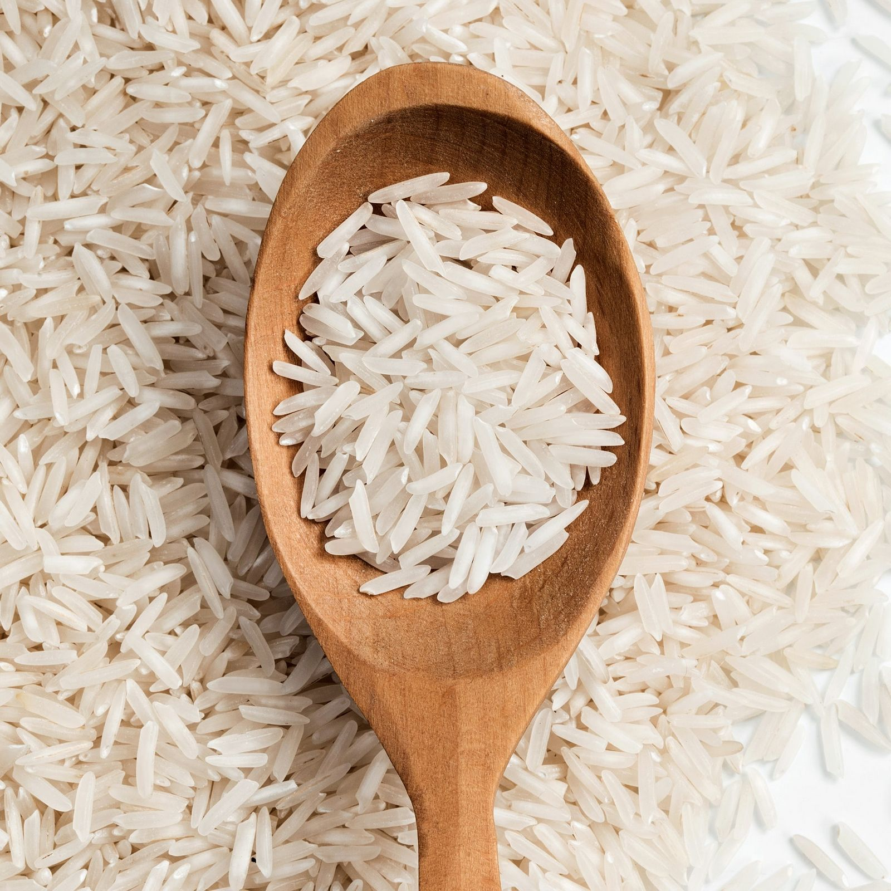
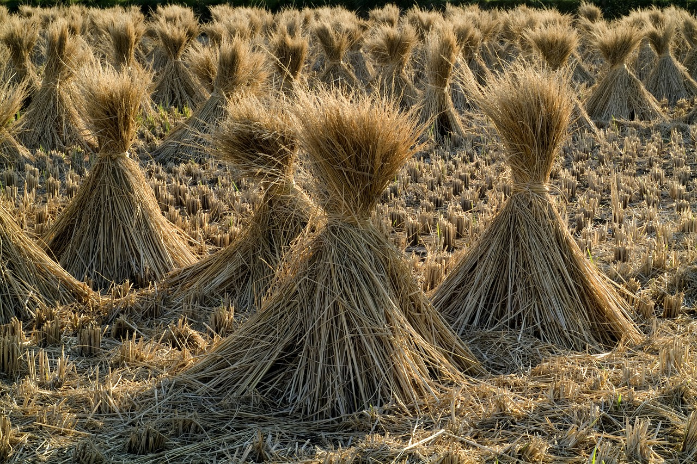
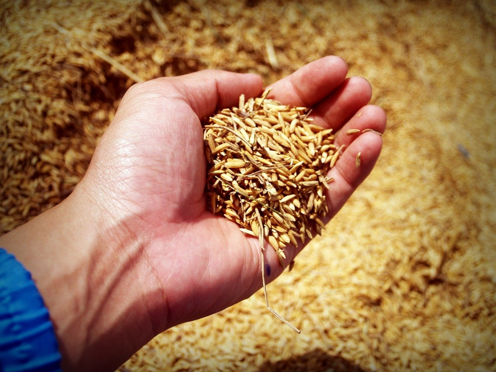

Rice
rice, (Oryza sativa), edible starchy cereal grain and the grass plant (family Poaceae) by which it is produced. Roughly one-half of the world population, including virtually all of East and Southeast Asia, is wholly dependent upon rice as a staple food; 95 percent of the world’s rice crop is eaten by humans. Rice is cooked by boiling, or it can be ground into a flour. It is eaten alone and in a great variety of soups, side dishes, and main dishes in Asian, Middle Eastern, and many other cuisines. Other products in which rice is used are breakfast cereals, noodles, and such alcoholic beverages as Japanese sake. 
Many cultures have evidence of early rice cultivation, including China, India, and the civilizations of Southeast Asia. However, the earliest archaeological evidence comes from central and eastern China and dates to 7000–5000 BCE. More than 90 percent of the world’s rice is grown in Asia, principally in China, India, Indonesia, and Bangladesh, with smaller amounts grown in Japan, Pakistan, and various Southeast Asian nations. Rice is also cultivated in parts of Europe, in North and South America, and in Australia.
Since rice can grow in a variety of climate and altitude it is cultivated in different seasons in different parts of the country. In areas of high rainfall and low winter temperature (northern and western parts) rice crop is grown once a year- during May to November. Two or three crops are grown in the southern and eastern states. India has three rice farming seasons- summer, autumn and winter. However, the chief rice growing season is ‘kharif’ season also called ‘winter rice’. The sowing time is June-July and is harvested during November- December months. 84% of the country’s rice supply is grown in the kharif crop.Rice cultivated during rabi season is also called as ‘summer rice’. It is sown in the months of November to February and harvested during March to June. 9% of total rice crop is grown in this season. Early maturing varieties are normally grown during this time.The pre-kharif or ‘autumn rice’ is sown during May to August. The sowing time also depends on the rainfall and weather condition. Hence the timing may differ slightly from place to place. Generally, it is harvested during September- October months. 7% of the total rice crop in India grows in this season and short duration varieties which mature within 90-110 days are cultivated
Since rice can grow in a variety of climate and altitude it is cultivated in different seasons in different parts of the country. In areas of high rainfall and low winter temperature (northern and western parts) rice crop is grown once a year- during May to November. Two or three crops are grown in the southern and eastern states. India has three rice farming seasons- summer, autumn and winter. However, the chief rice growing season is ‘kharif’ season also called ‘winter rice’. The sowing time is June-July and is harvested during November- December months. 84% of the country’s rice supply is grown in the kharif crop.Rice cultivated during rabi season is also called as ‘summer rice’. It is sown in the months of November to February and harvested during March to June. 9% of total rice crop is grown in this season. Early maturing varieties are normally grown during this time.The pre-kharif or ‘autumn rice’ is sown during May to August. The sowing time also depends on the rainfall and weather condition. Hence the timing may differ slightly from place to place. Generally, it is harvested during September- October months. 7% of the total rice crop in India grows in this season and short duration varieties which mature within 90-110 days are cultivated.
Bund farming system is followed in case of rice cultivation wherein the fields are flooded continuously upto 7-10 days before harvesting. To produce a kilogram of rice the crop on an average needs about 1500 liters of water. In other words, rice needs a huge amount of water for cultivation. This continuous flooding practice is followed to ensure weed control and sufficient water supply. Flooded soil also ensures:
Better nutrient availability
Moisture stress elimination
Micro-climate for favorable crop production
Legumes are the most commonly used crops used for crop rotation with rice. This is especially in case of places with lower water supply. Rice in such places is cultivated only once a year and the rest of the year the land is fallow. Hence planting legumes in such period would optimize land use and also help increase fertility of soil.
 Rice is propagated from paddy seeds. Therefore, seed selection plays a critical role in the yield. Some points that must be noted for selecting best quality seeds are:
Seeds must be fully-developed and mature
Clean paddy seeds
No signs of aging
High capacity of germination
The seeds must be soaked in salt solution for 10 minutes. The ones that float must be discarded while the ones that sink are mature seeds that must be used for planting. Immediately wash the seeds after removing from the solution. Farmers are advised to soak the seeds in a good fungicide solution like carbendazim for 24 hours. This ensures the seed protection from fungal diseases. If the area of cultivation is prevalent in bacterial diseases like leaf blight, then the seeds must be soaked in Streptocycline solution for 12 hours. After this, they must dried thoroughly under shade and then used for sowing. Normally seeds are sprouted before sowing or then grown in nurseries before transplanting
 Most farmers practice nursery bed method. Nursery beds are made occupying about 1/20th of the total field area. The paddy seeds are sown in the bed. They are ready within 25 days of sowing in low land areas while in higher altitudes they take about 55 days to become ready for transplantation. There are four different practices of cultivation of rice, viz. transplantation method, drilling method, broadcast method and Japanese method.
-Transplantation is the most commonly used method wherein seeds are first sown in nursery and the seedlings are transplanted to the main field once they show 3-4 leaves. Although this is the best yielding method, it requires heavy labor.
-Drilling method is exclusive to India. In this method, one person ploughs a hole in the land and the other person sows the seed. Ox is the most commonly used ‘person’ to plough the land.
-Broadcast method generally involves scattering of the seeds manually over a large area or in the entire field. Labor involved is very less and so is the precision. This method produces very less yield as compared to others.
-Japanese method has been adopted for the high yielding variety of rice and those that need a high amount of fertilizers. Seeds are sown in nursery beds and then transplanted to the main field. It has shown tremendous success for the high yielding varieties.